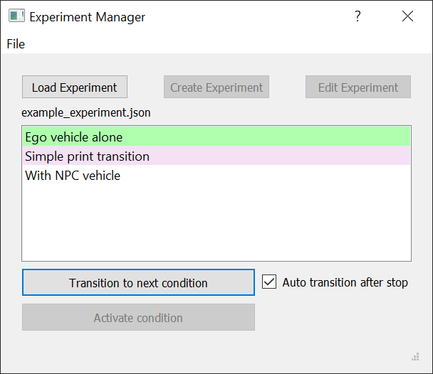

Example usage and testing
We provide an example experiment and a checklist to test your installation and the functionality of JOAN. We tested JOAN with Carla version 0.9.9. You can only run these checks when Carla is installed. These tests check the functionality of the HardwareManager, CarlaInterface, DataRecorder, DataPlotter, NPCccontrollerManager, and ExperimentManager.
Note
We also have a bit more info on running JOAN here.
The example experiment assets (see first steps) include a folder called ExpectedTestResults. This folder contains a screen capture of what the complete test process should look like.
Steps:
- If you haven't already done so: download the example experiment assets (link) and unpack
it in Carla's Content folder (for us
C:\carla\Unreal\CarlaUE4\Content\). Note; make sure you also have the CARLA assets (step in the CARLA install process) and added the vehicle 'hapticslab.audi' to CARLA's vehicle factory (see here for instruction, under ### Step 7: Adding vehicle assets to CARLA in Unreal) - Run CarlaUE4 and open
DebugMap.umaplevel: File → Open level → openDebugMap.umap. - If you open the map for the first time, give Carla some time to prepare it (compiling shaders, etc).
- Run CarlaUE4 (hit the play button); if you want to go full-screen, hit F11
- Run JOAN (
main.py); the HQ dialog should pop up. - Open ExperimentManager
- Click 'Load Experiment', select
example_experiment.json(it comes with the repo) - Click 'Transition to next condition' 
- Initialize JOAN by clicking the 'Initialize' button in HQ
- DataRecorder setup
- Open the DataRecorder GUI
- Select the parameters you would like to log, but for now check the boxes: HardwareManager, CarlaInterface, and NPCControllerManager)
- Close the DataRecorder GUI
- Click the 'Get Ready' button in JOAN (and wait for JOAN to get ready)
- Your vehicle should spawn in Carla (and you're behind the wheel)
- Click JOAN's 'Run' button and drive! (Use the W, A, S, and D keys)
- Once you're done, click 'Stop' in JOAN. The ExperimentManager should automatically transition to the next condition (note the checkbox 'Auto transition after stop')
- Let's test the next condition, hit 'Initialize', 'Get ready' and 'Run' again
- Another car (a non-player character) should spawn in front of you and start driving along the same route (controlled by the NPCControllerManager module)
- Once you're done, click Stop.
- Check that your data (.csv) files correspond to the example
.csvfile (provided with the downloaded map in the folder ExpectedTestResults). You should see rows of data samples, and column names corresponding to the parameters you selected in the DataRecorder step.
Lastly, to test the DataPlotter,
- after 'Get ready', open the DataPlotter
- Select the variables you want to plot in real-time.
- Run!